Univ'Air, au Musée de l'Air

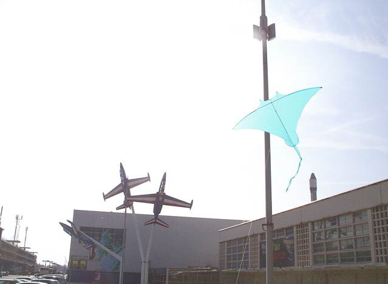
Le Musée de l'Air et de l'Espace (MAE), implanté dans l'ancienne aérogare du Bourget, organisait la semaine du 25/03/07 dans les salles du Musée, au milieu des avions, des ateliers divers, et en particulier cerf-volant. Avec Dominique Cotard et Bruno Kozon, j'ai participé à la journée du 25. Je n'avais pas l'intention de faire un reportage car occupé par d'autres rencontres. Mais l'hiver offre du temps libre et je comble avec les quelques photos prises cette lacune pour ceux qui ne connaissent pas le MAE, il vaut la visite...

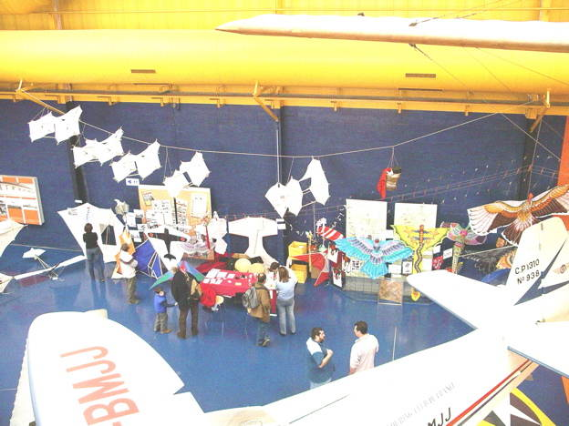
Sous les "vrais" avions, Dominique avait monté toute une expo, un train de Saconney, des panneaux explicatifs, des cerfs-volants balinais, un dragon chinois, des documents, des plans, etc... Et un gros Saconney, bien sûr ! J'avais apporté ma Demoiselle et quelques CVs indoors...

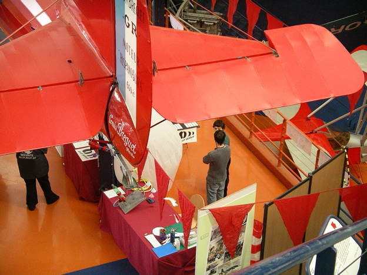
Nous n'étions pas les seuls... Sous la queue du Breguet à moteur Hispano-Suiza de grande croisière, des fabricants de fusées avec leur lanceur pneumatique !

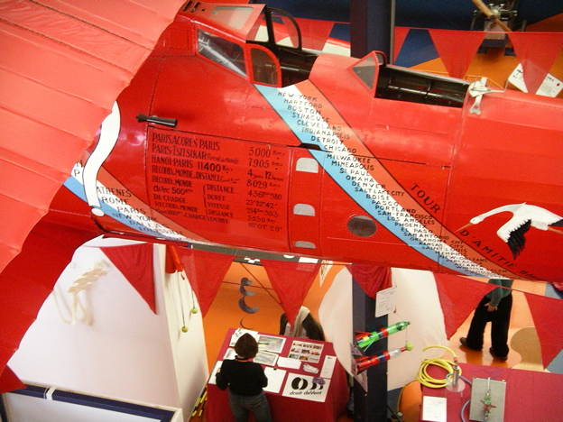
Les fusées sont belles, et bien finies... Le Breguet a fait pas mal de voyages, comme Hanoï-Paris, 11.400 km...

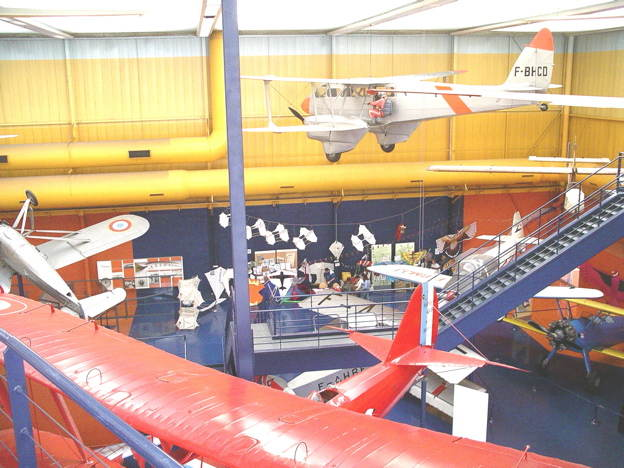
Au-dessus de nos têtes, bien des merveilles comme cet increvable Dragon Rapide propulsé par 2 moteurs de Tiger Moth (un genre de Stampe) et que j'ai encore vu larguer des parachutistes dans ma jeunesse...

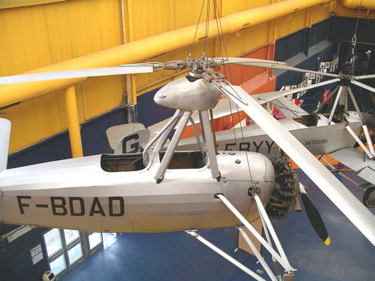
Il y a même des autogires (orthographe académique dérivée de l'italien !), inventés en 1923 à Madrid en Espagne, par Juan de la Cierva, ingénieur aéronautique espagnol !

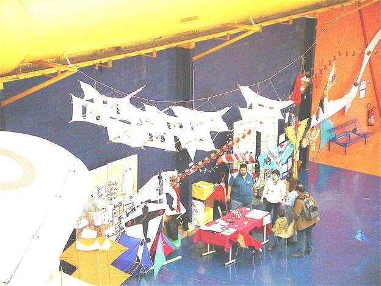
Dominique présente son atelier aux visiteurs...

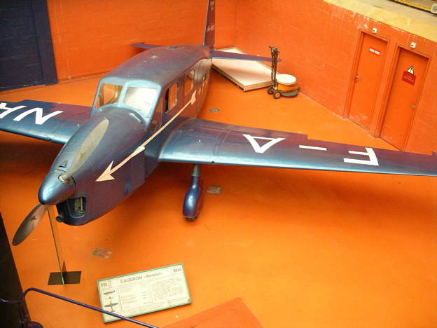
A côté de nous, un Caudron Simoun, à ne pas confondre avec le Caudron Rafale des records de vitesse. Caudron a produit plus de 115 types d'appareils ! Le Simoun était employé par la Poste (Air Bleu) ->
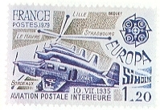
et faisait des allers-retours entre Paris et les grandes villes françaises, à 250 km/h de moyenne !

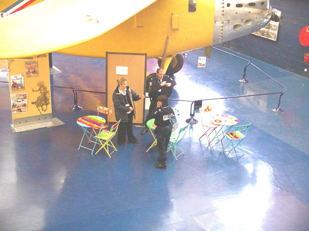
La police avait aussi son stand, un peu plus accueillant que sur les routes...

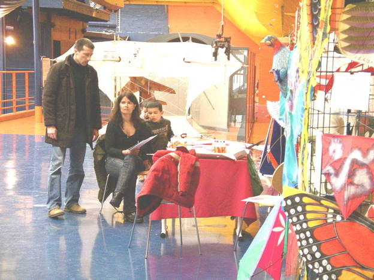
Quelques visiteurs se sont arrêtés et ont discuté longuement, comme cette belle mère...

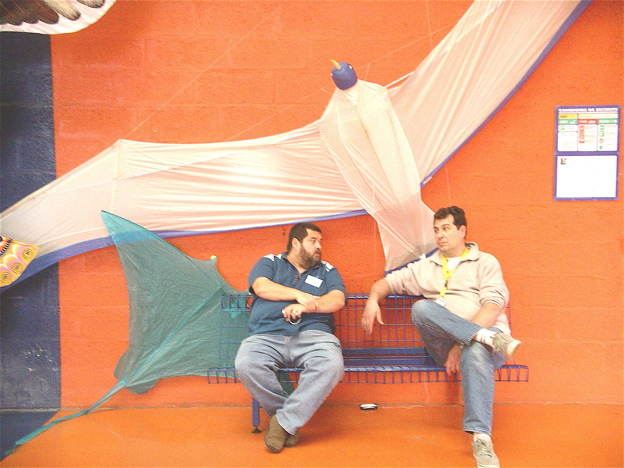
Les visiteurs se raréfient autour de midi, c'est l'heure de la pause...

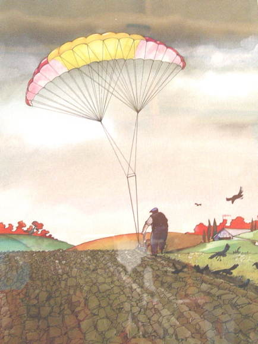
Je vais visiter l'exposition de dessins humoristiques, il y en a pour tous les goûts ! Un petit exemple d'utilisation pour les fanas de traction...

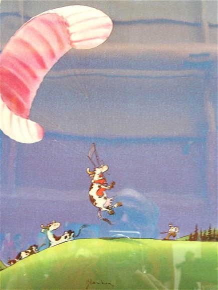
Pour les mêmes, un accident qui peut arriver...

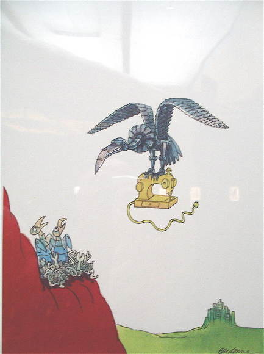
Pour les constructeurs de cerfs-volants fanas de la machine à coudre, attention à la menace de ce prédateur vorace !

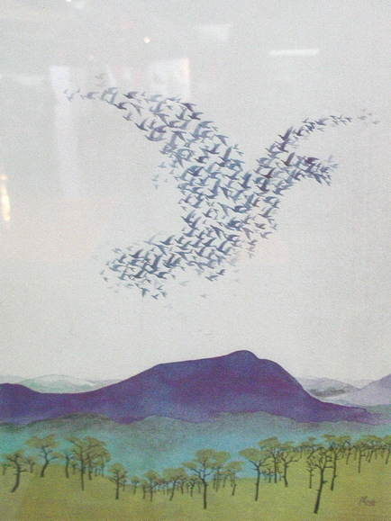
Plus poétique, ce bel oiseau, oeuvre collective destinée, elle, à impressionner les prédateurs...

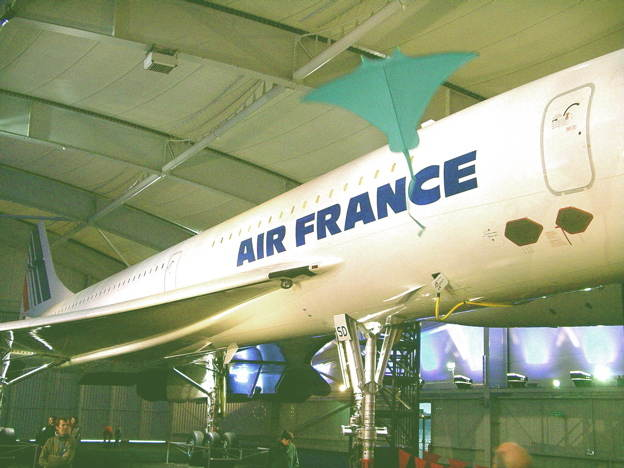
Nous avons aussi voulu nous faire plaisir en volant dans des environnements prestigieux. J'ai sorti ma raie Manta, qui fait petite figure devant le Concorde ! Du haut des marches de visite avait aussi lieu un concours de distance pour flèches en papier plié !

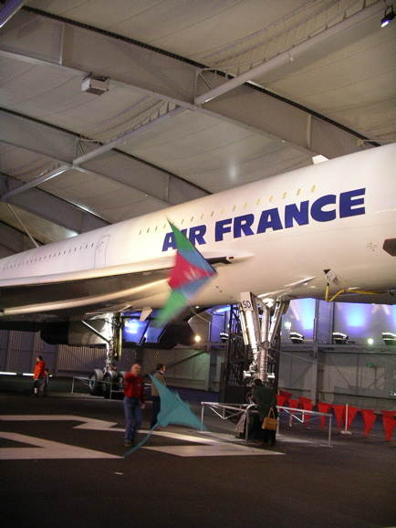
Bruno a sorti un petit delta, ce qui nous a permis de voler ensemble : il y a de la place dans ce hangar construit spécialement pour exposer le Concorde...

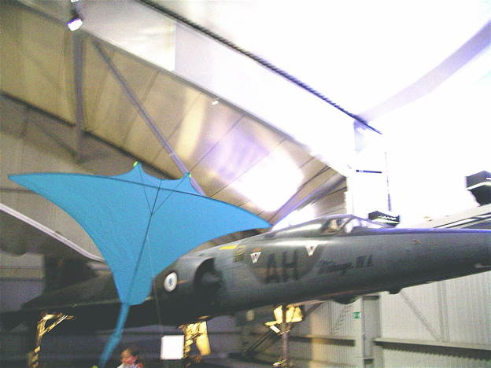
Je ne résiste pas aussi à voler devant des avions que j'ai connus, comme le Mirage IV A exposé dans le hangar Concorde...

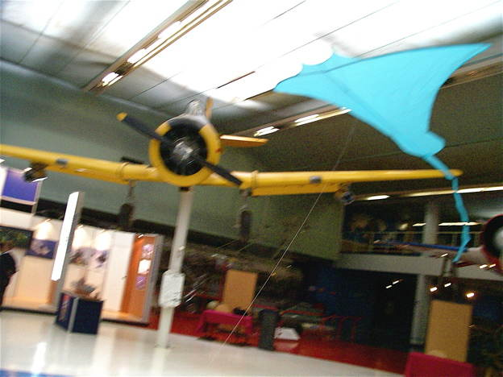
Ou encore devant le T6, avion sur lequel j'ai fait mon premier lâché...

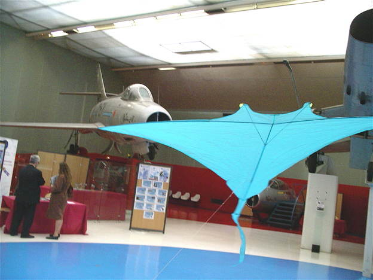
Et aussi le Mystère IV sur lequel j'ai passé mon brevet. Il n'a jamais eu de version biplace, il fallait bien l'apprendre et se lancer...

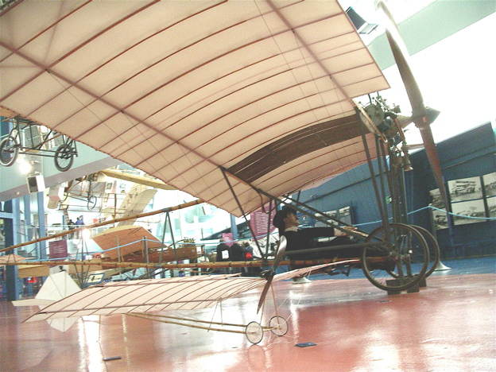
Comme j'ai monté ma Demoiselle, je profite de la présence en ces lieux de celle de Santos-Dumont (enfin, de la série...) pour effectuer un parallèle qui ne me semble pas trop choquant, bien que j'aie du simplifier pas mal...

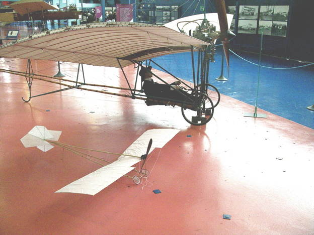
A hauteur d'homme, on voit des différences : l'aile en particulier est en double épaisseur sur la vraie et bien mieux tendue par des laçages en fil d'acier sur des nervures profilées...

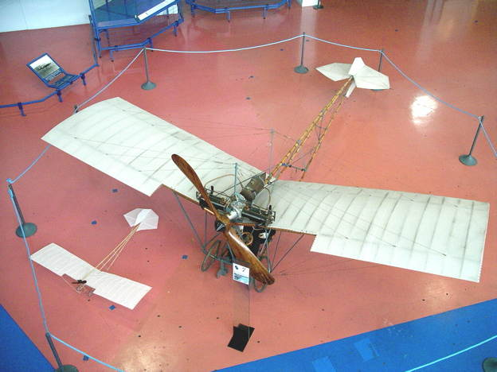
La vue de haut n'est pas non plus trop méchante. Ma gouverne de profondeur est peut-être un peu longue et mon moteur nettement petit... et je n'ai pas mis de réservoir !

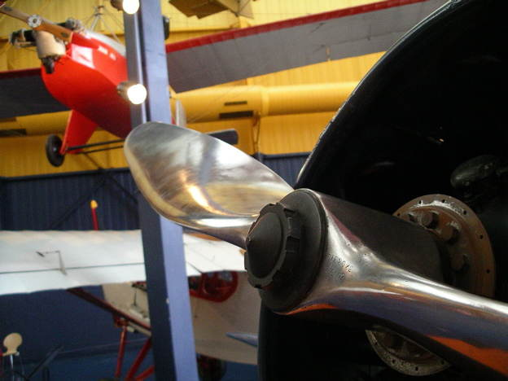
Retour à l'atelier pour montrer cette belle hélice. A l'époque, c'étaient des oeuvres d'art, construites "à vue d'oeil" ou presque par des spécialistes du bois, puis du métal... Dassault a commencé comme ça sa carrière !

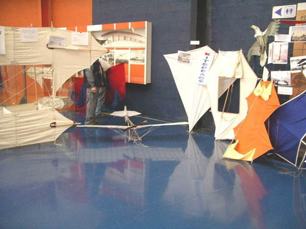
Dominique, spécialiste des cerfs-volants historiques, a évidemment exposé un Saconney moyen et d'autres CVs Bambou/Coton... Un Saconney réel "vole" d'ailleurs dans la Grande Galerie. Dominique a aussi organisé le 15 Septembre un atelier (Workshop) international de construction dans les locaux mêmes du MAE, avec visite des riches et mystérieuses coulisses et archives...
Univ'Air 2007 : Une journée passionnante, surtout si on aime les avions... Mais aussi une occasion rare de voir des cerfs-volants anciens, et de montrer à un public pas forcément connaisseur le vaste domaine du cerf-volisme.